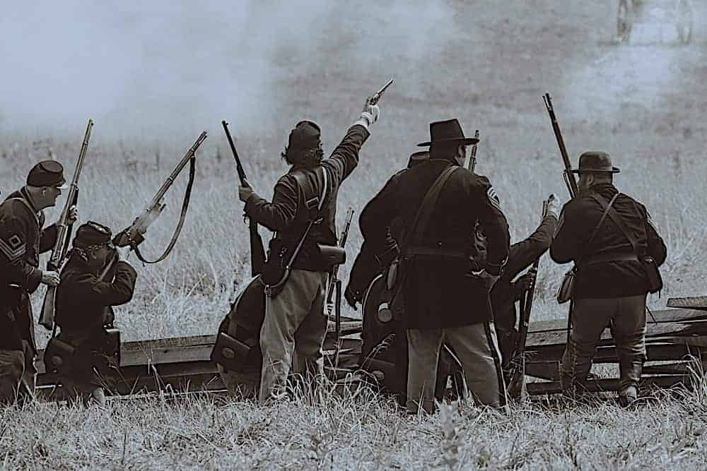

Civil War
Despite its anti-slavery sentiments, Gatlinburg, like most Smoky communities, tried to remain neutral during the war. This changed when a company of Confederate Colonel William Holland Thomas' Legion occupied the town to protect the salt peter mines at Alum Cave, near the Tennessee-North Carolina border. Federal forces marched south from Knoxville and Sevierville to drive out Thomas' men, who had built a small fort on Burg Hill.